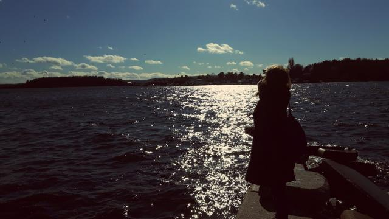
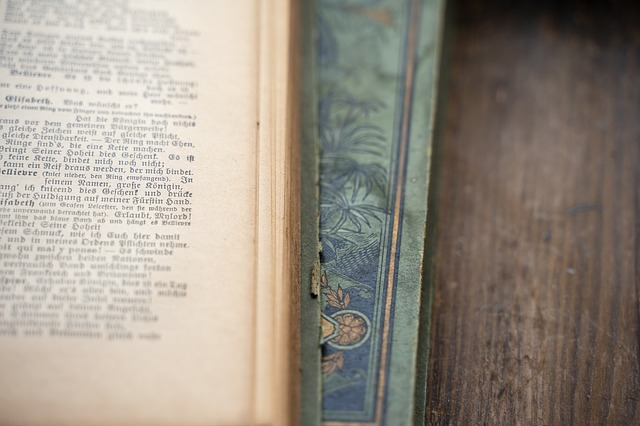
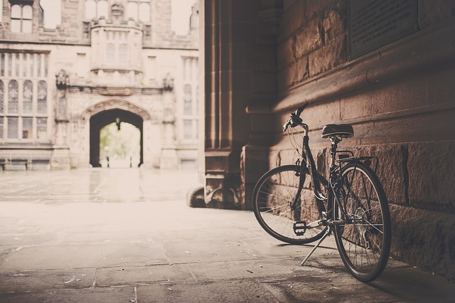

About me
About me
My name is Patrycja, I live in Wroclaw. My journey with web development started about 1 year ago, when
I realized,
that things I'm doing for life, are not really satisfying for me. I wanted to try something new,
ambitious and
creative.
Web development is challenchable for me and at the same time gives me freedom to be creative.
It makes me think, that everything is possible. You just need to believe in yourself and work really
hard.
At first I was learning from books and pages like Codecademy, freeCodeCamp or Udemy. I did a lot of
exercises with
Samuraj Programowania on Udemy
and a lot of other different small courses.
This year, in July I graduated post-graduate studies "Front End Development with React - application
programming" on Kozminski University.
Right now I'm looking for training or practice to make my experience and skills grow. I hope my
portfolio and projects are the best way to show what I can do right now.

I studied Philosophy and European Diplomacy.
I learned not only logical, but also creative thinking and going beyond
commonly accepted patterns. Thanks to this I can quickly find solutions that
nobody had seen before. Also I learned to express my views.

I have wide professional experience - I used to work as a copywriter, tutor
camp, salesman, informer, team leader, content specialist. I am currently
working as a Senior User
Advocate - I'm answering users requests (first support line).

I like traveling - I have visited many European countries and I would like
to see as many new cultures and places as possible. My dream is to go
to Siberia.

One of my passions is writing - I write short stories and poems. Currently
into the drawer :) but maybe, someday - who knows?
I play the guitar and the ukulele. I try to use my free time to
develop not only my programming skills, but also my musical abilities.

I love to ride a bike. I ride to work every day plus I do longer
trips on weekends.